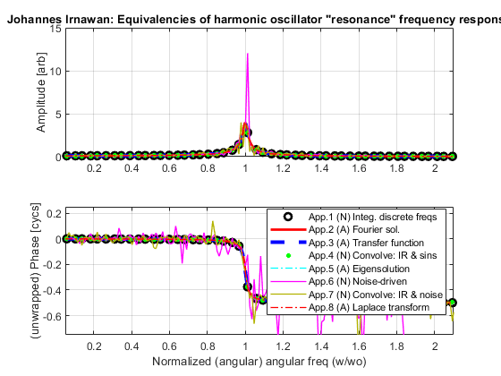
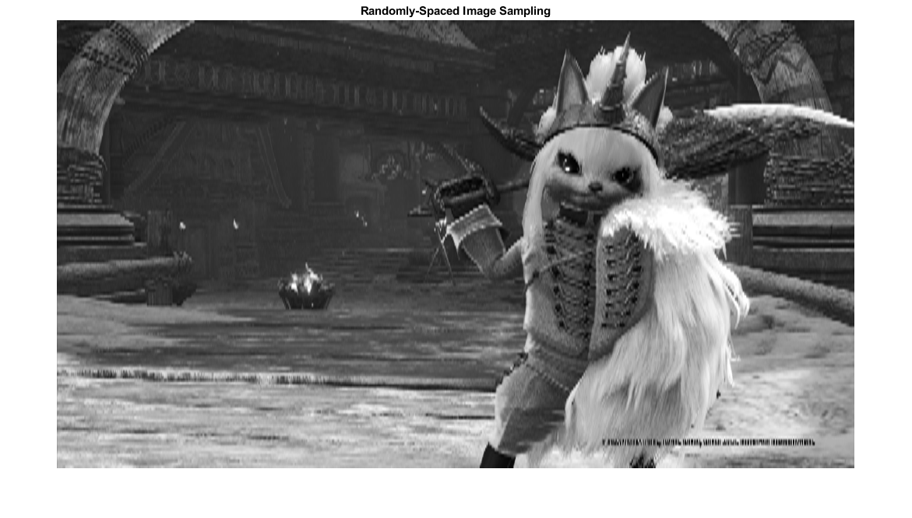
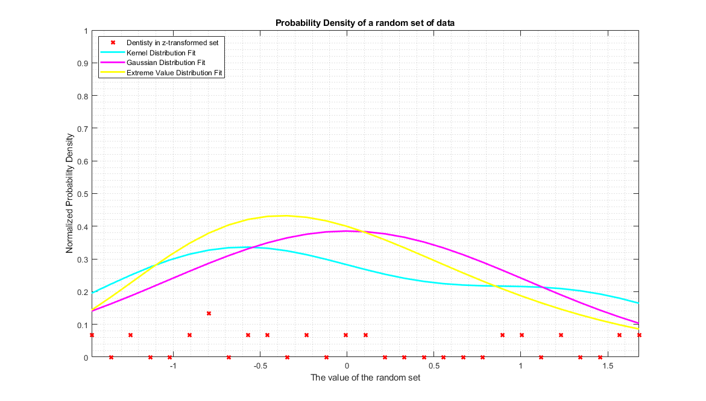

Homework 1 PHYS 4030
Johannes Irnawan, 215 010 960
Contents
Part 1.1: EXhoResonanceE.m
clc; clear; % This section is just running a given script and changing the title to % include the student's name. % The given script is EXhoResonancE.m made by Chistopher Bergevin and it % will be run from line 1 to line 263 of the original script. % ~~~~~~~~~~~~~~~~~~~~~~~~~~~~~~~~~~~~~~~~~~~~~~~~~~~~~~~~~~~~~~~~~~~~~~~~~~~~~~~~ % ### EXhoResonanceE.m ### 2020.06.18ff [Author: C.Bergevin] % [UPDATE IN PROGRESS] % o mag. scaling re App.7 needs correcting % ---- Overview % o Code to demonstrate equivalence of the "resonance" response of the damped driven % harmonic oscillator (DDHO) emerging from several different *approaches* (App.#) % as described below. These culminate together in Fig.1 % o Eqn. of motion for DDHO: % d^2xdt^2 = -((P.wo)^2)*x - P.gamma*dx/dt + (P.A)*sin(P.w*t) + P.A*xi(t) % --> Taken together, the (computational-based) equivalencies here % demonstrate a bedrock of linear systems theory (incl the convolution theorem), % implicit in much of analytical mechanics, signal processing, etc.... % ---- Brief outline of various approaches (more detailed theory/notes at bottom of code) % == App.1 == Numeric integration of ODE (e.g., via RK4), allowing sufficient time for responses % to settle into steady-state and then the relevant magnitudes/phases extracted via an FFT [xi=0] % == App.2 == Analytic solution via Fourier transforms used to solve ODE % == App.3 == Numeric computation of Transfer function (TF) - Obtained by determining % the impulse response (yIvS) and then taking the FFT to numerically get the TF % [Note: There are several "flavors" of impulse responses; see notes below] % == App.4 == Numeric Convolution: convolve the (numerically-integrated) impulse response % and sinusoidal waveforms in time domain (allowing for steady-state), then % compute/extract relevant spectral values % == App.5 == Analytic solution via "eigensolution" - determine eigenvalues for equilibrium % solution (i.e., x=\dot{x}=0), either numerically or analytically, to % obtain eigensolution, then compute the Fourier transform (see Fig.6 too) % [Note: eigensolution is equivalent to the impulse response] % == App.6 == Somewhat similar to App.1, except treating as an SDE and using an interpolated % noise drive, from which the associated transfer function can be % determined [xi is Brownian (i.e., interpolated Gaussian) noise] % == App.7 == Akin to App.4, but convolving impulse response w/ noise % == App.8 == Laplace transform of impulse response (a la Oppenheim & % Wilsky); can also plot the poles of this in complex s-plane (see Fig.13) % --- Requirements % o Code is designed to be self-contained and stand-alone (i.e., no toolboxes required). However, there % are several custom sub-functions utilized as follows. Note that these are also appended to the bottom of this code % as comments: % + EXhoResonanceFunc.m (for using ode45 re Apps.1,3; reqd. re App.3 even if P.solveType=0) % + rfft.m (to simplify FFT output; c/o C. Shera) % + convolve1.m (convol. code; only reqd. if P.Cmethod=0; note that built-in conv.m is faster and thus set as default) % o Note: Code is not designed for efficiency, more for computational clarity % o Note: For Fig.1, the mags. of various Apps. are scaled (explained in-line) and/or phases vertically shifted % o Note: Structures: P=specified params, V - "variables" dervied directly % from P, R - "results" as computed from the various apps. (and % subsequently used downstream) clear; figure(1); clf; % === User-specified Parameters ======================================= % --- Basic oscillator params. P.wo= 10; % resonant (angular) freq {10} P.gamma= 0.25; % damping coefficient {0.5} % --- ICs & Sinusoidal driving term params. (re Apps.1,4,6) P.p0 = 0.0; % Initial position {0} P.v0 = 0.0; % Initial velocity {0} P.A = 10; % Driving force amplitude (doesn't really matter; others are scaled to it) {10} P.wDrive= P.wo*[0.05 2.1]; % start and end angular drive freqs. {P.wo*[0.5 1.5]} P.wDriveN= 50; % # of discrete drive freqs. to run {25} P.bode= 0; % boolean to make Fig.1 a "Bode plot" (i.e., log-log axes) {0} % --- Time-related params. (for solving ODE/SDE and FFT) P.tmax = 200; % Maximum time to solve [s; arb] {200} P.SR= 150; % sample rate for time step [Hz; arb] {150} P.Npoints= 8192; % Number of points in time series for FFT, must be 2^n {8192} % --- ODE solver (re App.1; Note: App.3 implicitly uses ode45) P.solveType= 1; % 0-ode45, 1-hard-coded RK4 {1} P.stepF= 0; % boolean re using a fixed step-size for ode45 {0} P.Cmethod= 1; % boolean to specify whether to use custom convolution code (0) or Matlab's (1) {1} P.plotN= 0; % boolean re plotting the waveform and spectra for one driving freq. (Figs.2-4) {1} P.plotNnum= round(P.wDriveN/2-0); % driving freq. index to plot {round(P.wDriveN/2+N) where N=0} % --- noise & SDE solver (re Apps.6&7) P.freezeN= 0; % boolean to freeze noise for this code (see comments above) {1} P.seed= 114; % seed ID for randn {114} P.Nn= 6000; % # of "noise" points for noise waveform (must be >10) {6000} P.newN= 1; % re App.7: generate new noise (1) or use App.6 noise (0) {0} P.sdeN= 1; % re Apps.6&7: # of times to redo calc. so to spect. average (i.e., smooth) response out {1} (moot if P.freezeN=1) % ================================================================ % ++++++++++++++ % --- verify that the specified params. are not critically or overdamped if (P.wo^2<=P.gamma^2/4), disp('System is overdamped'); end % --- temporal logistics V.dt= 1/P.SR; % spacing of time steps V.init0 = [P.p0 P.v0]'; % Column vector of initial conditions. V.tspan = [0:V.dt:P.tmax]; % time interval for entire computation V.tW=[0:1/P.SR:(P.Npoints-1)/P.SR]; % (shorter/later) time interval for FFT window V.L = length(V.tspan); V.TW = V.L-(P.Npoints-1); % create offset point extracting FFT window % --- spectral logistics (e.g., create relevant freq. arrays for FFT bin labeling) V.freq= [0:P.Npoints/2]; % Note: these values are not angular (i.e., [freq]= 1/s, not rads/s) V.freq= P.SR*V.freq./P.Npoints; V.df = P.SR/P.Npoints; % freq. spacing between bins V.wDT= linspace(P.wDrive(1),P.wDrive(2),500); % create ang. freq. array for plotting analytic solution % --- various derived quantities V.Q= P.wo/P.gamma; % "quality factor" (Note: tauD=1/P.gamma=Q/P.wo, where tauD is time const. of build-up) V.lambdaP= 0.5*(-P.gamma+ sqrt(P.gamma^2-4*P.wo^2)); % Eigenvalues, for x=0 (undriven) V.lambdaM= 0.5*(-P.gamma- sqrt(P.gamma^2-4*P.wo^2)); % Note - Can also get eigenvalues via command: eig([0 1;-P.wo^2 -P.gamma]) V.wm= P.wo* sqrt(1-1/(2*V.Q^2)); % actual resonant freq. (French eqn.4.15) V.Z= P.gamma+ i*(V.wDT- P.wo^2./V.wDT); % impedance (see notes below; assumes mass is unity) V.Y= 1./V.Z; % admittance (reciprocal of impedance) % --- determine the appropriate phase ref (used for Apps.1&4) V.phaseREF= atan((P.gamma*V.wDT(1))./(-P.wo^2+V.wDT(1)^2)); % --- grabbing driving freqs. from freq array (for instances w/ discrete drive freqs) V.indx= find(V.freq>=P.wDrive(1)/(2*pi) & V.freq<=P.wDrive(2)/(2*pi)); % find relevant indicies V.indxB= round(linspace(V.indx(1),V.indx(end),P.wDriveN)); % one means to get the desired subset V.freqD= 2*pi*V.freq(V.indxB); % array of driving angular freqs % =================================================================== % --- display some relevant #s to screen disp(['Quality factor (P.wo/P.gamma)= ',num2str(V.Q)]); disp(['Eigenvalues (for x=0, undriven case): ',num2str(V.lambdaP),' and ',num2str(V.lambdaM)]); disp(['Normalized (actual) resonant frequency (wm/w0)= ',num2str(V.wm/P.wo)]); % ++++++++++++++ App.1 ++++++++++++++ % Numeric integration of ODE for discrete freqs, allowing for steady-state and % subsequently using the FFT to obtain relevant values in spectral domain % --- app1= funcHOapp1(P,V); % done via external routine funcHOapp1.m % --- correct phase and unwrap for plotting app1.phase= unwrap(app1.phaseSS-app1.phaseSS(1)+V.phaseREF)/(2*pi); R.magD= app1.mag; % store away discrete SS mags for later use % ^^^^^ [Fig.1 re App.1] Mags/phases extracted from the numeric steady-state responses figure(1); clf; subplot(211); hh1= plot(app1.wDrive/P.wo,app1.mag,'ko','MarkerSize',6,'LineWidth',2); hold on; grid on; subplot(212); hh2= plot(app1.wDrive/P.wo,app1.phase,'ko','MarkerSize',6,'LineWidth',2); hold on; grid on; % ++++++++++++++ App.2 ++++++++++++++ % Analytic solution (see French, 1971; eqns.4.11 on pg.85) % o As noted in the Notes section (bottom of code), these expressions are equivalent to using % Fourier transforms, which implicitly assume sinusoidal steady-state, to solve the main ODE % o To get these expressions, assume z=A*exp[-i*(w*t+ delta)] and plug into % the ODE, solving for A (magT) and delta (phaseT) % Note: No scaling of the mag. is needed here since P.A is explicitly included % o As motivated in App.8 re the Laplace transform when s=i*w, this "frequency" response can % be rewritten so the eigenvalues appear in the denomitor as the "poles" (see also Fig.13), that is: % magT* exp(i*phaseT) = (P.A)/((i*w-lambdaP)*(i*w-lambdaM)) app2.mag= P.A./sqrt((P.wo^2-V.wDT.^2).^2 + ((P.gamma*V.wDT).^2)); % mag (theory) app2.phaseT= atan((P.gamma*V.wDT)./(-P.wo^2+V.wDT.^2)); % phase (theory; note sign change in denom. re convention) app2.phase= unwrap(2*app2.phaseT)/(4*pi); % phase unwrap for plotting R.magC= app2.mag; % store away discrete SS mags for later use % ^^^^^ [Fig.1 re App.2] figure(1); subplot(211); hh3= plot(V.wDT/P.wo,app2.mag,'r-','LineWidth',2); subplot(212); hh4= plot(V.wDT/P.wo,app2.phase,'r-','LineWidth',2); % kludge to get unwrapping right % ++++++++++++++ App.3 ++++++++++++++ % "Impulse response & Transfer function" re linear systems theory % (i.e., the Fourier transform of the impulse response is the TF) % o Two versions of TF here (yIp and yIv) which differ in how the "impulse" is % implemented (i.e., position versus velocity) --> yIv is used re comparison for Fig.1 % see Fig.5 also for yIp versus yIv comp.); % o Note that P.p0 and P.v0 are not used here (since App.3 reqs. them to be non-zero) % o Scaling the magnitude is req. because the size of the "impulse" is arbitrary % (i.e., no connection assumed between init0v and/or init0p & P.A) % --- app3= funcHOapp3(P,V,R); % done via external routine funcHOapp3.m app3.phase= unwrap(app3.phaseIv)/(2*pi); % phase unwrap for plotting app3.mag= abs(app3.specIv)* (max(R.magC)/max(abs(app3.specIv))); % scale impulse mag. re max. value of driven case (Note: abs(specI)<mag) R.yIvS= app3.yIvS; % store away impulse response for later use % ^^^^^ [Fig.1 re App.3] figure(1); subplot(211); hh5= plot(2*pi*V.freq/P.wo,app3.mag,'b--','LineWidth',3); %xlim([wDT(1) wDT(end)]/P.wo); subplot(212); hh6= plot(2*pi*V.freq/P.wo,app3.phase,'b--','LineWidth',3); % kludge to get unwrapping working % ++++++++++++++ App.4 ++++++++++++++ % Convolve (in time domain) input drive sinusoids w/ system's impulse response % o When convolving the impulse response and the drive, the inital % transient is apparent, so we use the "long" time window (t rather than % tW) and extract the "steady-state" portion of the convolved response % --- app4= funcHOapp4(P,V,R); % done via external routine funcHOapp4.m note reqs. "impules response from app3, hence R pass-on] % --- correct phase and unwrap for plotting app4.phase= unwrap(app4.phaseCTv-app4.phaseCTv(1)+V.phaseREF)/(2*pi); % ^^^^^ [Fig.1 re App.4] figure(1); subplot(211); hCT1= plot(V.freqD/P.wo,app4.mag,'g+','LineWidth',2,'MarkerSize',4); subplot(212); hCT2= plot(V.freqD/P.wo,app4.phase,'g+','LineWidth',2,'MarkerSize',4); % ++++++++++++++ App.5 ++++++++++++++ % Fourier transform of "Eigensolution" app5.yEPi= imag(exp(V.tW*V.lambdaP)); % "correct" eigensolution (see also Fig.6 re other sols. in time domain) app5.yEPr= real(exp(V.tW*V.lambdaP)); % used in Fig.5 app5.specEPi= rfft(app5.yEPi); % compute Fourier transform app5.mag= abs(app5.specEPi)* (max(R.magC)/max(abs(app5.specEPi))); % scale mag. re max. value of driven case (Note: abs(specEPi)<mag) app5.phase= angle(app5.specEPi)/(2*pi); % ^^^^^ [Fig.1 re App.5] figure(1); subplot(211); hEigSm= plot((V.freq*2*pi)/P.wo,app5.mag,'c-.','LineWidth',1); subplot(212); hEigSp= plot((V.freq*2*pi)/P.wo,app5.phase,'c-.','LineWidth',1); % ++++++++++++++ App.6 ++++++++++++++ % SDE version, i.e., drive DHO w/ ("determinisitic") Brownian noise % --- allow for the possibility of re-doing calc. so to average (and thereby smooth out) for mm=1:P.sdeN temp6= funcHOapp6(P,V,R); % done via external routine funcHOapp6.m temp6m(mm,:)= temp6.mag; temp6p(mm,:)= temp6.phase; end % average the responses to smooth out (if desired) if (mm>1), app6.mag= mean(temp6m); app6.phase= mean(temp6p); else app6.mag= temp6m; app6.phase= temp6p; end % ^^^^^ [Fig.1 re App.6] figure(1); subplot(211); plot(V.freq/(P.wo/(2*pi)),app6.mag,'m-','LineWidth',1); % convert to ang. freq. subplot(212); hSDE=plot(V.freq/(P.wo/(2*pi)),app6.phase,'m-','LineWidth',1); % ++++++++++++++ App.7 ++++++++++++++ % Convolve impulse response (akin to App.4) *but* w/ noise % o When convolving the impulse response and the drive, the inital % transient is apparent, so we use the "long" time window (t rather than % tW) and extract the "steady-state" portion of the convolved response % --- %app7= funcHOapp7(P,V,R); % done via external routine funcHOapp7.m % --- allow for the possibility of re-doing calc. so to average (and thereby smooth out) for mm=1:P.sdeN V.kldgS= round(randn*100); % create a new seed each time around temp7= funcHOapp7(P,V,R); % done via external routine funcHOapp6.m temp7m(mm,:)= temp7.mag; temp7p(mm,:)= temp7.phase; end % average the responses to smooth out (if desired) if (mm>1), app7.mag= mean(temp7m); app7.phase= mean(temp7p); else app7.mag= temp7m; app7.phase= temp7p; end % ^^^^^ [Fig.1 re App.7] figure(1); subplot(211); hCN1= plot(V.freq/(P.wo/(2*pi)),app7.mag,'-','LineWidth',1,'Color',0.7*[1 1 0]); subplot(212); hCN2= plot(V.freq/(P.wo/(2*pi)),app7.phase,'-','LineWidth',1,'Color',0.7*[1 1 0]); % ++++++++++++++ App.8 ++++++++++++++ % Laplace transform [see Oppenheim & Wilsky eqn.9.53 (1st ed.); sec.9.4.2 in 2nd ed.] % o Here s is the complex frequency s= P.sigma + i*wDT (wDT is the drive frequency) % --> see also Figs.13-14 (e.g., s-plane plot of poles of H) % o Real part of s needs to be zero (otherwise peak scales up/down) % since "the frequency response is the transfer function evaluated on the % imaginary axis of the s-plane, that is when s=jw" (ref. MIT 2.14 notes) % o O&W eqn.9.53 has P.wo^2 in the numerator for H (since their drive term has amplitude P.wo^2), so I replaced it w/ P.A % o See comments above re App.2 (as well as re Fig.14) psi= P.gamma/(2*P.wo); % first incl change of vars. for damping coeffic. (re their eqn4.169) c1= P.wo*(-psi + sqrt(psi^2 -1)); % two eigenvalues (O&W eqns.4.172) c2= P.wo*(-psi - sqrt(psi^2 -1)); % (Note: same as lambdaP and lambdaM above) P.sigma= 0.0; % see note above; set to 0 {0} s= P.sigma+ i*V.wDT; % determine assoc. complex freq. Hlaplace= P.A./((s-c1).*(s-c2)); % compute Laplace transform of impulse response app8.mag= abs(Hlaplace); app8.phase= unwrap(angle(Hlaplace))/(2*pi); % ^^^^^ [Fig.1 re App.7] figure(1); subplot(211); happ8a= plot(V.wDT/P.wo,app8.mag,'r-.','LineWidth',1); subplot(212); happ8b= plot(V.wDT/P.wo,app8.phase,'r-.','LineWidth',1); % % --- rescale axes % subplot(211);axis([0 2.5 0 2]); subplot(212); axis([0 2.5 -0.6 0.1]); % ================================================================= % ++++++++++++++ [Fig.1] Make a legend to put it all together and set % horiz. limits; Note that "A" means analytic and "N" numerical figure(1); subplot(212); legend([hh2 hh4 hh6 hCT2 hEigSp hSDE hCN2 happ8b],'App.1 (N) Integ. discrete freqs',... 'App.2 (A) Fourier sol.','App.3 (A) Transfer function','App.4 (N) Convolve: IR & sins',... 'App.5 (A) Eigensolution','App.6 (N) Noise-driven','App.7 (N) Convolve: IR & noise',... 'App.8 (A) Laplace transform','Location','best'); subplot(211); xlim([V.wDT(1) V.wDT(end)]/P.wo); ylabel('Amplitude [arb]'); title('Johannes Irnawan: Equivalencies of harmonic oscillator "resonance" frequency response'); subplot(212); xlim([V.wDT(1) V.wDT(end)]/P.wo); ylim([-0.75 0.25]); xlabel('Normalized (angular) angular freq (w/wo)'); ylabel('(unwrapped) Phase [cycs]'); % reset axes to visualize as a "Bode plot" if (P.bode==1), subplot(211); set(gca,'xscale','log'); set(gca,'yscale','log'); subplot(212); set(gca,'xscale','log'); end
Quality factor (P.wo/P.gamma)= 40 Eigenvalues (for x=0, undriven case): -0.125+9.99922i and -0.125-9.99922i Normalized (actual) resonant frequency (wm/w0)= 0.99984
Part 1.2: Image Editting
clc; clear; % For this section, an image needs to be loaded into MatLab in grayscale. % The image that will be loaded is a screenshot of Monster Hunter:World OG_Pic = rgb2gray(imread('Image.png')); % Loads Picture Pic.Dimensions = size(OG_Pic); % Image Dimension Pic.Pixels = prod(Pic.Dimensions); % Image pixel number % Showing the original grayscaled image figure_1 = figure('Name','Grayscaled Original Image','NumberTitle','off'); imshow(OG_Pic), title('Grayscaled Original Image') % Defining scale factors a = randi([1 10],1); % Image scale factor oF = randi([1 10],1); % Noise scale factor % Regularly-Spaced Image Sampling % The idea of this sampling is to multiply the dimensions (x & y) of the % original image by 1 / 2a. Resample.Picture = griddedInterpolant(double(OG_Pic)); Resample.x = (0:a*2:Pic.Dimensions(1))'; Resample.y = (0:a*2:Pic.Dimensions(2))'; Resample.Picture = uint8(Resample.Picture({Resample.x,Resample.y})); Resample.Picture = imresize(Resample.Picture,... [Pic.Dimensions(1) Pic.Dimensions(2)]); figure_2 = figure('Name','Regularly-Spaced Image Sampling',... 'NumberTitle','off'); imshow(Resample.Picture), title('Regularly-Spaced Image Sampling') % Randomly-Spaced Image Sampling % The idea of this sampling is to multiply the dimensions (x & y) of the % original image by a random number separately. Resample.Picture = griddedInterpolant(double(OG_Pic)); Resample.x = (0:(abs(randn(1))*a):Pic.Dimensions(1))'; Resample.y = (0:(abs(randn(1))*a):Pic.Dimensions(2))'; Resample.Picture = uint8(Resample.Picture({Resample.x,Resample.y})); Resample.Picture = imresize(Resample.Picture,... [Pic.Dimensions(1) Pic.Dimensions(2)]); figure_3 = figure('Name','Randomly-Spaced Image Sampling',... 'NumberTitle','off'); imshow(Resample.Picture), title('Randomly-Spaced Image Sampling') % Image Dithering % The idea of this process is to add an additive noise to one of the image % resampling. The image resampling the will be used is the Randomly-Spaced % Image Sampling. [Resample.x,Resample.y] = size(Resample.Picture); for x = 1:Resample.x for y = 1:Resample.y Resample.Picture(x,y) = Resample.Picture(x,y)+(randi([1 5],1)*oF); end end figure_4 = figure('Name','Randomly-Spaced Image Sampling + Dither',... 'NumberTitle','off'); imshow(Resample.Picture), title('Randomly-Spaced Image Sampling + Dither')
Part 2: Statistics Check
clc; clear; clf; % Given a set of random data, the following will be done to the data: % - Find the mean, median and mode of the data given % - Determine if this data is skewed or symetric % - Describe the variance, range, and standard deviation % - Compare to a 'real world' data set of your choice % - Normalize with a z transform % - Plot the distribution and discuss your results % Random data given (slightly modified code from the given code): set_length = randi([15,16],1); % Setting the length to either 15 or 16 set = []; for count = 1:set_length set(count) = randi([1,30],1); end set = sort(set); % Sorting the set in ascending order % Sorting the set into x, the values in the set, and y, the number of times % the values appear in the set. s.x = 1:30; for count = 1:30 s.y(count) = length(find(set==count)); end % Finding Mean % To find the mode of the set, the total sum of the set is divided into % the length of the set. s.mean = sum(set)/length(set); % Finding Median % To find the median of the set, the data is first sorted from smallest to % biggest. If the length of the data is odd, the number right in the middle % is the median. If the length of the data is even, the mean of the two % middle numbers is the median. even_check = length(set)/2 - floor(length(set)/2); % To check if the length is odd or even, the length is divided in half and % is rounded down. This value is subtracted from half of length. If the % result is 0, then the length is even. Otherwise, it is odd. if even_check == 0 s.median = (set(length(set)/2) + set(length(set)/2+1))/2; else s.median = set(ceil(length(set)/2)); end % Finding Mode % To find the mode of the set, each number of values from 1 to the maximum % value in the data is counted. The highest number is presented as the % mode. for count = 1:max(set) v_number(count) = length(find(set==count)); % This v_number will be used to plot the set end s.mode = find(v_number==max(v_number)); % Finding if the data is skewed or symmetrical. % The easiest way to see if the data is skewed or symmetrical is to check % where the mean lies in contrast to the median. % - If the mean is lower than the median, then it is skewed to the left % (negatively skewed). % - If the mean is higher than the median, then it is skewed to the right % (positively skewed). % - Otherwise, it is symmetrical if s.mean > s.median s.description = 'Positively skewed'; elseif s.mean < s.median s.description = 'Negatively skewed'; else s.description = 'Symmetrical'; end % Finding the variance of the set % The variance of set is described by the mean of the squared of the set % minus the squared of the mean of the set. s.variance = (sum(set.^2)/length(set))-(s.mean^2); % Finding the range of the set % The range of the set is from the lowest value to the highest value in the % set s.range = [min(set) max(set)]; % Finding the standard deviation % The standard deviation of the set is the square root of the variance s.standard_deviation = s.variance^(1/2); % Comparing to the real world Real_World_Compare = fprintf("Real World Comparison\n\nThis type of data can be found in many surveys. One particular topic that struck me \ncovers a number of traffic accident in a certain hour.In a small scale, like half minute periods, \nthe survey can look similar to the given random data.\n\n\n"); % Z-transform normalization % Z-transform normalization moves all point in the set so that the mean of % the set is 0 and the standard deviation is 1. for count = 1:length(set) z_set(count) = (set(count) - s.mean)/s.standard_deviation; end % Doing the previous commands to the normalized set % Sorting the z-transformed set into x and y z.x = (s.x - s.mean)/s.standard_deviation; z.y = s.y/sum(s.y); % Mean z.mean = 0; % Median z.median = (s.median - s.mean)/s.standard_deviation; % Mode z.mode = (s.mode - s.mean)/s.standard_deviation; % Symmetric or Skewed description z.description = s.description; % Variance z.variance = (sum(z_set.^2)/length(z_set))-(z.mean^2); % Range z.range = [min(z_set) max(z_set)]; % Standard Deviation z.standard_deviation = z.variance^(1/2); % Plotting the set and distributtion fits plot(z.x,z.y,'rx',z.x,pdf(fitdist(z_set','Kernel'),z.x),'c-',... z.x,pdf(fitdist(z_set','Normal'),z.x),'m-',... z.x,pdf(fitdist(z_set','GeneralizedExtremeValue'),z.x),'y-',... 'LineWidth',2) title('Probability Density of a random set of data') grid minor axis([min(z.range) max(z.range) 0 1]) xlabel('The value of the random set') ylabel('Normalized Probability Density') legend('Dentisty in z-transformed set','Kernel Distribution Fit',... 'Gaussian Distribution Fit','Extreme Value Distribution Fit',... 'Location','NorthWest') % Discussion Plot_Result = fprintf("Plot Result\n\nI manage to fit 3 distribution into the plot. They are:\n1)Kernel Distribution\n2)Normal Distribution\n3)Extreme Value (Gumbel) Distribution\n\nEach distribution shows different information about the data.\nFor example, the normal distribution shows the mean and the standard deviation of the data\nwhile the Gumbel distribution shows the mean, median, and mode relative to each other.\nIn the graph shown, normal distribution cannot show the skewedness of the data like the other two,\nwhile Kernel distribution tries to show more than one peak. Out of the three, Gumbel distribution is the most\nreliable fit to show the data's description.\n\n\n"); Given_Data = set Data_Description = s Z_Transformed_Data = z_set Z_Transform_Description = z
Real World Comparison
This type of data can be found in many surveys. One particular topic that struck me
covers a number of traffic accident in a certain hour.In a small scale, like half minute periods,
the survey can look similar to the given random data.
Plot Result
I manage to fit 3 distribution into the plot. They are:
1)Kernel Distribution
2)Normal Distribution
3)Extreme Value (Gumbel) Distribution
Each distribution shows different information about the data.
For example, the normal distribution shows the mean and the standard deviation of the data
while the Gumbel distribution shows the mean, median, and mode relative to each other.
In the graph shown, normal distribution cannot show the skewedness of the data like the other two,
while Kernel distribution tries to show more than one peak. Out of the three, Gumbel distribution is the most
reliable fit to show the data's description.
Given_Data =
Columns 1 through 13
2 4 7 8 8 10 11 13 15 16 23 24 26
Columns 14 through 15
29 30
Data_Description =
struct with fields:
x: [1×30 double]
y: [1×30 double]
mean: 15.0667
median: 13
mode: 8
description: 'Positively skewed'
variance: 78.9956
range: [2 30]
standard_deviation: 8.8879
Z_Transformed_Data =
Columns 1 through 7
-1.4702 -1.2451 -0.9076 -0.7951 -0.7951 -0.5701 -0.4575
Columns 8 through 14
-0.2325 -0.0075 0.1050 0.8926 1.0051 1.2301 1.5677
Column 15
1.6802
Z_Transform_Description =
struct with fields:
x: [1×30 double]
y: [1×30 double]
mean: 0
median: -0.2325
mode: -0.7951
description: 'Positively skewed'
variance: 1.0000
range: [-1.4702 1.6802]
standard_deviation: 1.0000
 Source Materials
% 1) Taylor, John R., "An Introduction to Error Analysis: The study of % uncertainty in physical measurements (Second Edition)". California: % University Science Books, 1997 % 2) Stickler, Benjamin, and Schachinger, Ewald, "Basic Concepts in % Computational Physics". Switzerland: Springer International Publishing, % 2016